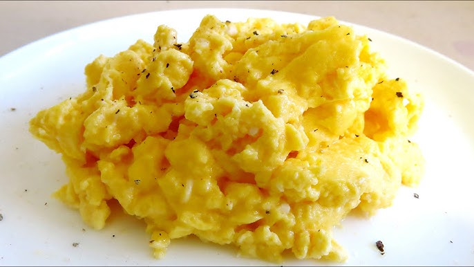

Home
Cheesy Scrambled Eggs Recipe

Description
Scrambled eggs but... With cheese!
The cheese adds extra flavour and creaminess - tasty!
Ingredients:
- 3 eggs
- 1 tbsp butter
- About 50g of cheese
- Salt and pepper
Instrucions:
- Whisk the Eggs – In a bowl, beat the eggs with milk (if using), salt, and pepper until smooth.
- Melt Butter – Heat a non-stick pan over low-medium heat and melt the butter.
- Cook the Eggs – Pour in the eggs and let them sit for a few seconds before stirring gently with a spatula.
- Add Cheese – When the eggs are halfway cooked (still soft but not fully set), sprinkle in the shredded cheese.
- Finish Cooking – Continue stirring gently until the eggs are fluffy and the cheese is melted.
- Serve Immediately – Enjoy hot, optionally topped with extra cheese, chives, or a pinch of chili flakes.